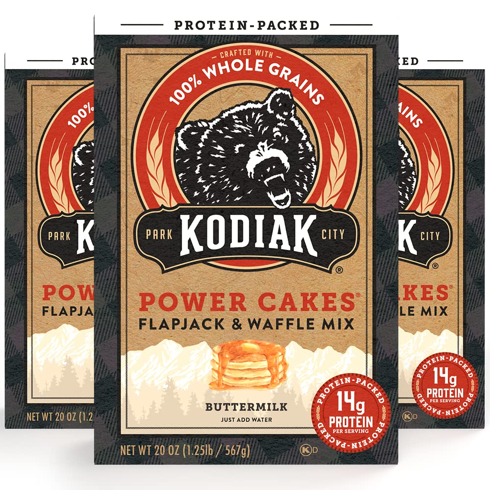

Protein Pancakes
Scroll down

Desription
Protein Packed Kodiak pancakes are a great way to get good quality protein in your day
Ingredients
- Kodiak Pancake Mix
- One Egg
- Almond Milk
- Butter
- Toppings of your choice
Steps
- Pour 1 cup of kodiak pancake mix into a bowl
- Crack one egg and add it into the bowl
- Pour 3/4 cup of almond milk into bowl
- Turn on the stove and cover the pan with some butter
- Pour the pancake mix on the pan and cook until your liking
- Top the pancakes with whatever floats your boat